Analysis of Fixed-Point Numerically Controlled Oscillator
Numerically controlled oscillators (NCOs) are an efficient means of generating sinusoidal signals, and are useful when you require a continuous-phase sinusoidal signal with variable frequency.
Contents
Introduction
This demo uses MATLAB® and the Signal Processing Toolbox™ to analyze the NCO of a digital down-converter (DDC) implemented in fixed-point arithmetic. Using spectral analysis, you will measure the spurious free dynamic range (SFDR) of the NCO, and explore the effects of adding phase dither. The number of dither bits affects hardware implementation choices. Adjusting the number of dither bits in simulation lets you see the trade-offs among noise floor level, spurious effects, and number of dither bits before implementing the DDC in hardware. The DDC in the demo, designed to meet the GSM specification, models the Graychip 4016.
The DDC is a key component of digital radios. It translates the high-input sample rates of a digital radio down to lower sample rates (baseband) for further and easier processing. Adhering to the GSM specifications, in this example, the DDC has an input rate of 69.333 MHz and is tasked with converting the rate down to 270 KHz.
The DDC consists of an NCO and a mixer to quadrature down convert the input signal to baseband. A Cascaded Integrator-Comb (CIC) then low-pass filters the baseband signal, and along with two FIR decimating filters downsample the signal to achieve the desired low sample rate, which is then ready for further processing. The final stage, depending on the application, often includes a resampler that interpolates or decimates the signal to achieve the desired sample rate. Further filtering can be achieved with the resampler. See the block diagram of a typical DDC, below. Note that Simulink® handles complex signals, so we don't have to treat the I and Q channels separately.

While this demo focuses on the analysis of the NCO, a demo titled "Implementing the Filter Chain of a Digital Down-Converter", focusing on designing the three-stage, multirate, fixed-point filter chain and HDL code generation is available in the Filter Design Toolbox™.
The Numerically Controlled Oscillator
The digital mixer section of the DDC includes a multiplier and an NCO, which provide channel selection or tuning for the radio. The mixer is basically a sine-cosine generator, creating complex values for each sine-cosine pair. The typical NCO has four components: the phase accumulator, the phase adder, the dither generator, and sine-cosine lookup table.
Here is a typical NCO circuit modeled in Simulink, similar to what you might see in the Graychip data sheet.
open_system('ddcnco');
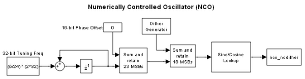 Based on the input frequency, the NCO's phase accumulator produces values that address a sine-cosine lookup table. The phase adder specifies a phase offset that modulates the output of the phase accumulator. The Dither Generator provides phase dithering to reduce amplitude quantization noise, and improving the SFDR of the NCO. The Sine/Cosine Lookup block produces the actual complex sinusoidal signal, and the output is stored in the variable nco_nodither.
In the Graychip, the tuning frequency is specified as a normalized value relative to the chip's clock rate. So for a tuning frequency of F, the normalized frequency is F/Fclk, where Fclk is the chip's clock rate. The phase offset is specified in radians, ranging from 0 to 2pi. In this demo the normalized tuning frequency is set to 5/24 while the phase offset is set to 0. The tuning frequency is specified as a 32-bit word and the phase offset is specified as a 16-bit word.
Since the NCO is implemented using fixed-point arithmetic, it experiences undesirable amplitude quantization effects. These numerical distortions are due to the effects of finite wordlengths. Basically, sinusoids are quantized creating cumulative, deterministic, and periodic errors in the time domain. These errors, appear as line spectra or spurs in the frequency domain. The amount of attenuation from the peak of the signal of interest to the highest spur is the SFDR.
The SFDR of the Graychip is 106 dB, but the GSM specification requires that the SFDR be greater than 110 dB. There are several ways to improve the SFDR, and you will explore adding phase dither to the NCO.
The Graychip's NCO contains a phase dither generator which is basically a random integer generator used to improve the oscillator's output purity. Dithering causes the unintended periodicities of the quantization noise (which causes "spikes" in spectra and thus poor SFDR) to be spread across a broad spectrum, effectively reducing these undesired spectral peaks. Conservation of energy applies, however, so the spreading effectively raises the overall noise floor. That is, the dithering is good for SFDR, but only up to a point.
Let's run the NCO model and analyze its output in the MATLAB workspace. This model does not use dithering.
sim('ddcnco'); whos nco*
Name Size Bytes Class Attributes nco_nodither 1x1x20545 328720 double complex
The plot below displays the real part of the first 128 samples of the NCO's output, stored in the variable, nco_nodither.
plot(real(squeeze(nco_nodither(1:128)))); grid title('Real Part of NCO Output - No Dithering') ylabel('Amplitude'); xlabel('Samples'); set(gcf,'color','white');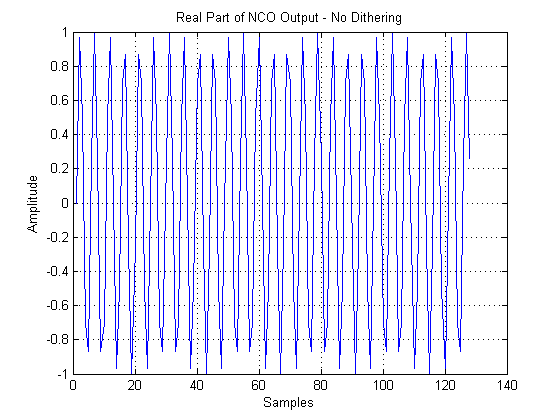
Spectral Analysis of NCO Output
Choosing an appropriate technique for estimating spectra depends on understanding your data well. Given a large data set (more than 20,000 samples), you can rely on an FFT-based classical method, such as a periodogram, to calculate the spectral content of the NCO's output.
Although the signal has some randomness, it is primarily sinusoidal, so you will measure its mean-square spectrum, rather than the power spectral density, which is more appropriate for measuring the power of random signals. For a demo on measuring power, refer to Measuring the Power of Deterministic Periodic Signals. Below we use the msspectrum method to calculate and plot the mean-square spectrum of the NCO signal.
Define the spectral analysis algorithm.
h = spectrum.periodogram
h =
EstimationMethod: 'Periodogram'
WindowName: 'Rectangular'
Calculate and plot the mean-square spectrum.
Fs = 69.333e6; msspectrum(h,real(nco_nodither),'Fs',Fs) set(gcf,'color','white');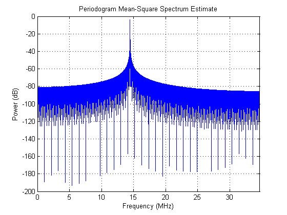
As expected, the mean-square spectrum plot shows a peak at 14.44 MHz, which is the NCO's tuning frequency, 5/24*Fs = 14.444 MHz.
The noise floor, however, is about -82 dB, which is too high to meet the GSM specification, which requires -110 dB or less. Phase dither can improve this, but before you add dither take a closer look at your analysis.
Choosing the Right Window
Periodogram spectral analysis uses a rectangular window, which provides good frequency resolution (that is, it has a narrow mainlobe bandwidth), but has a high noise floor. Multiplying the sinusoidal NCO signal by a rectangular window is the same as convolving the two signals in the frequency domain. The convolution of a sinusoidal signal's frequency response, which is a delta, by a rectangular window, whose frequency response is a sin(x)/x, results in a sin(x)/x response centered at the frequency of the delta. So there is a smearing of the delta function in the frequency domain. The noise floor will be the addition of the two signals. Therefore, what you see is the noise floor of the rectangular window, which is much higher than the highest signal spur.
To verify that the noise floor of the window is preventing you from seeing the signal spurs, look at the time and frequency response of a rectangular window. You can design such a window using the window design tool, WinTool, but here you will use the command line.
Define and view the frequency response of a rectangular window.
N = length(nco_nodither); wrect = sigwin.rectwin(N)
wrect =
Name: 'Rectangular'
Length: 20545
wvtool(wrect)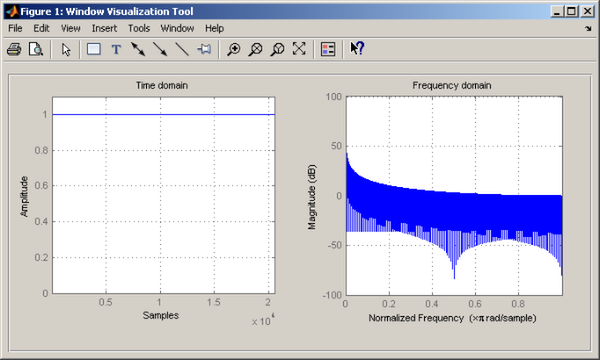
If you zoom in or use data markers you see that the maximum attenuation of the rectangular window is about 84 dB, which is roughly the noise floor seen in the spectrum plot of the NCO output.
Since you are not trying to resolve two sinusoids, but rather looking for spectral content below 100 dB, use a Von Hann window, which provides more than 100 dB of attenuation.
whann = sigwin.hann(N)
whann =
Name: 'Hann'
Length: 20545
SamplingFlag: 'symmetric'
View the Von Hann, or simply Hann, window in time and the frequency domain.
wvtool(whann)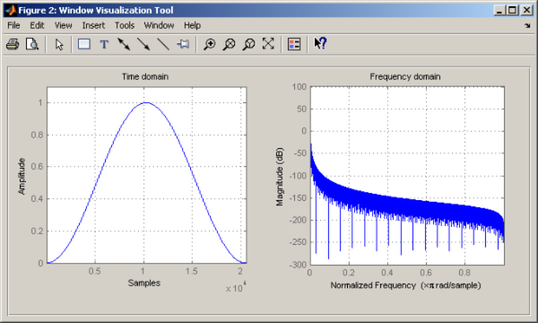
The frequency domain plot on the right shows the Hann window's much lower noise floor, demonstrating that, the Hann window is better suited for this particular problem. Here are the results of using the Hann window to calculate the spectral estimate of the NCO output.
h.WindowName = 'Hann'; hh = msspectrum(h,real(nco_nodither),'Fs',Fs); figure, plot(hh) % Plot Mean-square Spectrum set(gcf,'color','white');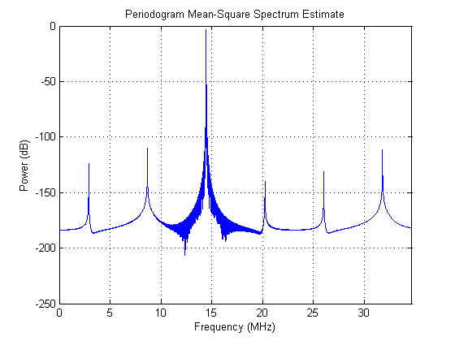
Using a Hann window produced a much lower noise floor with its attendant spurious peaks. Now you can measure the SFDR and look for ways to decrease the spurious peaks through phase dithering.
Measuring SFDR
Zoom in using the axis command to observe the peak of the carrier and the highest spurious peak.
axis([0 35 -5 0])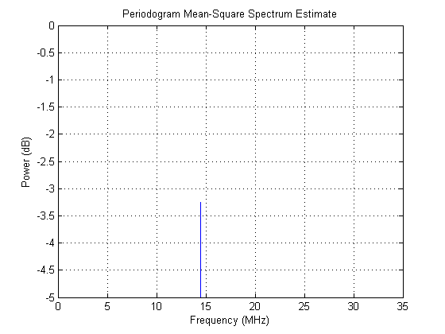
The peak is roughly -3.25 dB. Now zoom in to the highest spur.
axis([0 35 -120 -100])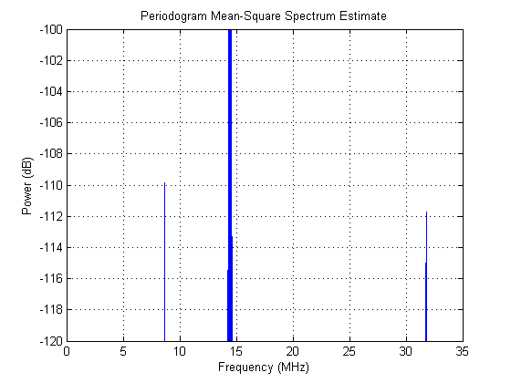
The highest spur is about -110 dB. We expect a SFDR value around 106.75 dB. Alternatively, SFDR can be obtained by
[sfd,spur,frq] = sfdr(hh,'MinSpurDistance',5e6)
sfd =
106.5971
spur =
-109.8527
frq =
8666625
We obtain the value of SFDR to be 106.5971 dB which is close to the rough value obtained by visual inspection. Also the magnitude of the highest spur in dB and the frequency at which it occurs are provided. A minimum spur distance of 5 Mhz is specified to ignore peaks that appear in close proximity to the carrier.
Exploring the Effects of Dithering
To explore adding dither to the NCO, the NCO circuit shown above has been encapsulated in a subsystem and duplicated three times. A different amount of dither was selected for each NCO. Although the NCO allows a range of 1 to 19 bits of dither to be specified, you will try just few values. Running this model will produce three different NCO outputs based on the amount of dither added.
open_system('ddcncowithdither')
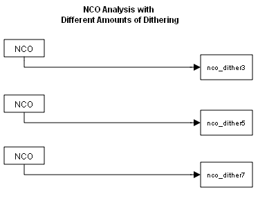 Running the simulation will produce three signals in the MATLAB workspace that you can then analyze using the spectral analysis algorithm defined above. You can run the simulation from the model or from the command line using the sim command.
sim('ddcncowithdither')
After the simulation completes you are left with the signals that are the NCOs' output. Each signal shows a different amount of dithering.
whos nco*
Name Size Bytes Class Attributes nco_dither3 1x1x20501 328016 double complex nco_dither5 1x1x20501 328016 double complex nco_dither7 1x1x20501 328016 double complex nco_nodither 1x1x20545 328720 double complex
As seen above, a Von Hann window doesn't mask the spurious peaks, and as expected with modeling a Graychip, the highest spur is at about -110 dB. The SFDR is about 107 dB. The GSM specification, remember, requires that it be at least 110 dB. This is where dithering will help meet the specification.
Start by adding 3 bits of dithering.
hh = msspectrum(h,real(nco_dither3),'Fs',Fs); figure, plot(hh) % Plot Mean-square Spectrum set(gcf,'color','white');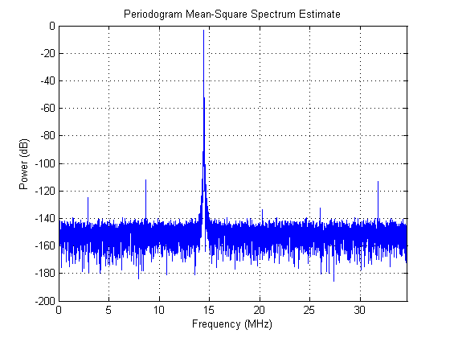
Zoom in again using the axis command to look at the carrier peak and the highest spurious peak.
axis([0 35 -5 0])

As expected, the peak is again roughly -3.25 dB. Now zoom in to the highest spur.
axis([0 35 -120 -100])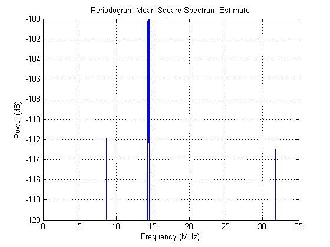
Now measure SFDR
[sfd,spur] = sfdr(hh,'MinSpurLevel',-140,'MinSpurDistance',5e6)
sfd = 108.5962 spur = -111.8508
A minimum spur level of -140 dB is specified to ignore spurs that are below -140 dB. Specifying a minimum spur level helps in reducing the processing time.
With three bits of dither added, the highest spur is now about 112 dB. The SFDR is 108.5962 dB. It still fails to meet the GSM specification.
Now add 5 bits of dithering.
hh = msspectrum(h,real(nco_dither5),'Fs',Fs); figure, plot(hh) % Plot Mean-square Spectrum set(gcf,'color','white');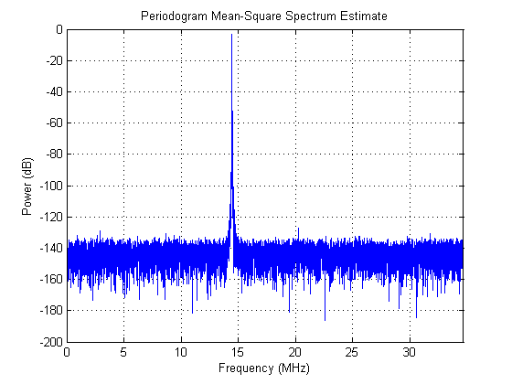
The peak of the carrier frequency should still be roughly -3.25 dB. Zoom in to the highest spur.
axis([0 35 -130 -120])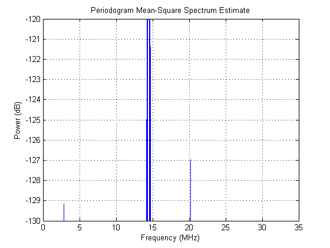
With five bits of dither added, the highest spur is now about -127 dB.
Now calculate SFDR
[sfd,spur] = sfdr(hh,'MinSpurLevel',-140,'MinSpurDistance',5e6)
sfd = 123.7116 spur = -126.9662
The SFDR is 123.7116 dB, exceeding the GSM specification.
It appears that more dither gives better results, so add 7 bits of dithering.
hh = msspectrum(h,real(nco_dither7),'Fs',Fs); figure, plot(hh) % Plot Mean-square Spectrum set(gcf,'color','white');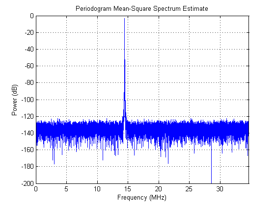
Calculate SFDR
[sfd,spur] = sfdr(hh,'MinSpurLevel',-140,'MinSpurDistance',5e6)
sfd = 119.1595 spur = -122.4141
The magnitude of highest spur is -122.4141 dB, which results in SFDR of 119.1595 dB. Using 7 bits of dithering meets the GSM specification, but is not as effective as using 5 bits of dithering.
Comparing Results
Tabulate the SFDR for each NCO output against the amounts of dithering for each NCO output.
Number of Spur Free Dynamic Dither bits Range(dBc)
0 106.5971
3 108.5962
5 123.7116
7 119.1595
Summary
This demo analyzed the output of an NCO used in a digital down converter for a GSM application. Spectral analysis was used to measure the SFDR, the difference between the highest spur and the peak of the signal of interest. Spurs are deterministic, periodic errors that result from quantization effects. The demo also explored the effects of adding dither in the NCO, which adds random data to the NCO to improve its purity. We found that using five bits of dithering achieved the highest SFDR.